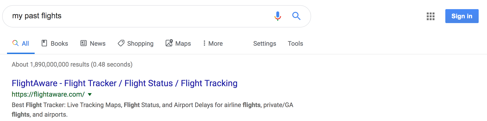

Calculate your flying CO₂ emissions in 3 clicks
For this to work you need to be on a desktop computer, and have been using Gmail for flight bookings.
-
Drag the following link to your bookmarks bar:
CO₂ ✈️ Calculator
-
Click on that bookmark, which will take you to your past flights on Google (log in if required).
-
While on that Google page, click on the bookmark again. This will show your CO₂ emissions from past flights.
The following animation demonstrates these steps:

Having issues? See the FAQ.
FAQ
Q: I can't see my past flights on Google, what's wrong?
For you to see your past flights on Google, you need to be logged in to your Google/Gmail account, and then search for "my past flights" on Google.
Here is a screenshot when not logged in:

If you click on the "Sign in" button in the top right and enter your Google/Gmail credentials, you should see your past flights:

If you are logged in and still don't see any flights, you either have that listing feature disabled (see here), or you simply don't have any flights bookings in your Gmail inbox.